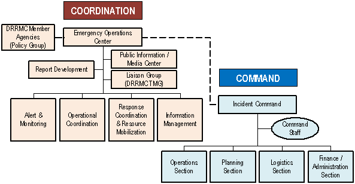

This appendix is intended to provide an overview multiagency coordination and the relationship between on-scene command and multiagency coordination.
Command can be defined as the authority to direct, order and control at the field level. On-scene commanders have explicit statutory or regulatory authority for command. The ICS command structure also allows that authority to be delegated from the Responsible Official to the Incident Commander in response to an emergency. Incident Command has direct tactical and operational responsibility for conducting incident management activities.
Multiagency Coordination is a process that allows all levels of government and all disciplines to work together more efficiently and effectively. Multiagency coordination occurs across the different disciplines involved in incident management, across jurisdictional lines, or across levels of government. Multiagency coordination can and does occur on a regular basis whenever personnel from different agencies interact in such activities as preparedness, prevention, response, recovery, and mitigation. Disaster Risk Reduction and Management Councils (DRRMCs) facilitate multiagency coordination at all levels of government.
DRRMC Multiagency Coordination Functions
Initially the Incident Command/Unified Command and the Liaison Officer may be able to provide all needed multiagency coordination at the scene. However, as the incident grows in size and complexity, broader off-site support and coordination may be required.
The chart below depicts the relationship between and among the DRRMC Chairperson as the RO, DRRMC Emergency Operations Centers (EOCs) and the ICS organization at the on-scene level.
The DRRMC, through its Chairperson, and likewise the RO, provides the IC his policy directions and strategic objectives, the mission and authority to achieve the overall priorities of the on-scene disaster response operations, namely, life safety, incident stabilization and property/environmental conservation and protection.

The DRRMC EOC, which is generally located away from the disaster site, supports the IC by making executive / policy decisions, coordinating interagency relations, mobilizing and tracking resources, collecting, analyzing and disseminating information, and continuously providing alert advisories / bulletins and monitoring of the developing situation. The EOC does not command the on-scene level of the incident.
On the other hand, the IC manages the incident at the scene with the support of the relevant Command and General Staff depending on the complexity of the situation. The IC also keeps the RO / DRRMC Chairperson and the EOC of all important matters pertaining to the incident.
DRRMC Member Agency representatives must be fully authorized to represent their agency. Their functions can include the following:
In some situations, the activation of the DRRMC may not be warranted, yet some level of multiagency coordination is required. In such situations, ad hoc multiagency coordination groups can be formed to support the incident requirements. These ad hoc groups and their respective agency representatives should perform the functions outlined here.